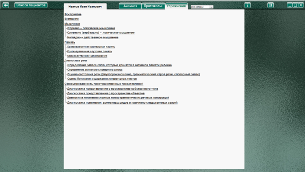
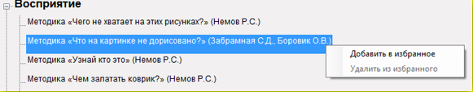
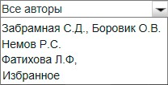

На данной странице представлен список упражнений, имеющихся в программе. Список имеет древовидную структуру, в которую сгруппированы упражнения и состоит из:
Заголовок группы
Заголовок подгруппы
Название упражнения
При клике левой кнопкой мыши по заголовку группы или подгруппы откроется список с названиями упражнений.
При клике левой кнопкой мыши по названию упражнения – откроется страница с выбранной методикой.
При клике правой кнопкой мыши названию упражнения - откроется меню, позволяющее добавить (удалить) методику в избранное.

Это позволяет пользоваться списком наиболее часто используемых методик более удобно, без поиска по всему списку упражнений. Для просмотра избранных методик воспользуйтесь выпадающим меню фильтрации отображения методик по автору.
Меню фильтрации отображения методик по автору.
 |
При выборе нужного пункта меню, в списке упражнений отображаются методики, соответствующие критерию выбора. Например, при выборе пункта «Немов Р.С.», в списке будут отображаться только методики Немова Р.С., остальные упражнения будут скрыты. |